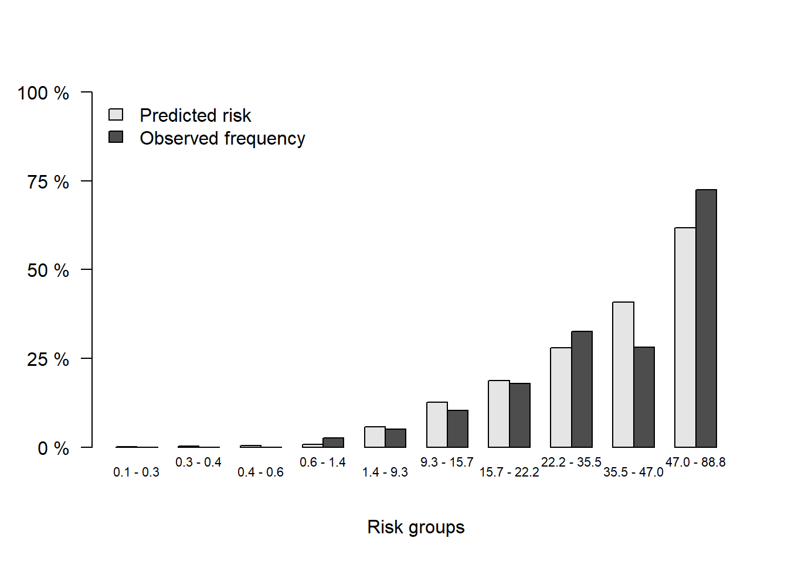

rm(list = ls())
lowbirth <- read.csv("./datasets/lowbirth.csv")29 分类模型校准曲线绘制
评价模型的好坏主要看区分度和校准度，校准度方面目前最推荐的还是校准曲线（calibration curve），可用于评价模型预测概率和实际概率一致性。
除了我介绍的这几种方法外，还有predtools、caret等可以用于分类变量的校准曲线绘制。如果你明白了校准曲线就是真实概率和预测概率的分箱平均值散点图，你其实可以自己画，并不局限于逻辑回归和cox回归，像随机森林、lasso、SVM等很多模型都可以画出校准曲线。
拟合优度检验（Hosmer-Lemeshow）可以用来比较预测概率和实际概率是否有显著性差异，但是这个检验也只是能说明两者有没有统计学意义，并不能说明好多少、差多少。
29.1 准备数据
使用lowbirth数据集，这个数据集是关于低出生体重儿能否存活的数据集，其中dead这一列是结果变量，0代表存活，1代表死亡，但是存活和死亡的比例严重失衡，存活的只有94个，死亡的有471个。其余列都是预测变量。该数据集没有缺失值，也没有高度相关的自变量。
获取lowbirth数据请在公众号：医学和生信笔记，后台回复20220520。或者到粉丝QQ群文件自取。
查看一下数据：
dim(lowbirth) # 565行，10列
## [1] 565 10
str(lowbirth)
## 'data.frame': 565 obs. of 10 variables:
## $ birth : num 81.5 81.6 81.6 81.6 81.6 ...
## $ lowph : num 7.25 7.06 7.25 6.97 7.32 ...
## $ pltct : int 244 114 182 54 282 153 229 182 361 378 ...
## $ race : chr "white" "black" "black" "black" ...
## $ bwt : int 1370 620 1480 925 1255 1350 1310 1110 1180 970 ...
## $ delivery: chr "abdominal" "vaginal" "vaginal" "abdominal" ...
## $ apg1 : int 7 1 8 5 9 4 6 6 6 2 ...
## $ vent : int 0 1 0 1 0 0 1 0 0 1 ...
## $ sex : chr "female" "female" "male" "female" ...
## $ dead : int 0 1 0 1 0 0 0 0 0 1 ...
# 看下结果变量的比例
table(lowbirth$dead)
##
## 0 1
## 471 94race这一列有4个类别，分别表示4个人种，但是东方人和美洲人太少了，这样会影响模型拟合，所以我们这两个人种变成other：
# 其中两个人种人数太少了
table(lowbirth$race)
##
## black native American oriental white
## 325 14 4 222
# 把人数太少的变成other
lowbirth[lowbirth == "oriental"] <- "other"
lowbirth[lowbirth == "native American"] <- "other"在R语言中一定要把分类变量因子型，这样才能在建模时进行正确的编码：
library(dplyr)
lowbirth <- lowbirth %>%
mutate(across(where(is.character),as.factor)
#dead = factor(dead, levels=c(1,0),labels=c("live","death"))
)
str(lowbirth)
## 'data.frame': 565 obs. of 10 variables:
## $ birth : num 81.5 81.6 81.6 81.6 81.6 ...
## $ lowph : num 7.25 7.06 7.25 6.97 7.32 ...
## $ pltct : int 244 114 182 54 282 153 229 182 361 378 ...
## $ race : Factor w/ 3 levels "black","other",..: 3 1 1 1 1 1 3 1 3 3 ...
## $ bwt : int 1370 620 1480 925 1255 1350 1310 1110 1180 970 ...
## $ delivery: Factor w/ 2 levels "abdominal","vaginal": 1 2 2 1 2 1 2 2 1 2 ...
## $ apg1 : int 7 1 8 5 9 4 6 6 6 2 ...
## $ vent : int 0 1 0 1 0 0 1 0 0 1 ...
## $ sex : Factor w/ 2 levels "female","male": 1 1 2 1 1 1 2 2 2 1 ...
## $ dead : int 0 1 0 1 0 0 0 0 0 1 ...
注释
如果结果变量是分类变量，我建议把结果变量也变为因子型，并设定好因子的顺序，但是对于rms来说，最好是使用数值型，所以这里我没改。
然后把数据划分为训练集、测试集，划分比例为7:3：
set.seed(123)
ind <- sample(1:nrow(lowbirth),nrow(lowbirth)*0.7)
train_df <- lowbirth[ind,]
test_df <- lowbirth[- ind, ]
dim(train_df)
## [1] 395 10
dim(test_df)
## [1] 170 10接下来就是绘制校准曲线，首先我们会在训练集拟合模型，并使用bootstrap法进行内部验证，然后绘制内部验证的校准曲线，最后绘制测试集的校准曲线（其实就是外部验证集的校准曲线，但是我们数据量不多，只能这样演示了）。
29.2 方法1：rms
rms可以使用内部重抽样的方法绘制校准曲线，可以选择bootstrap法或者交叉验证法，下面我们选择500次bootstrap的内部验证方法：
library(rms)
# 必须先打包数据
dd <- datadist(train_df)
options(datadist="dd")
# 建立模型
fit2 <- lrm(dead ~ birth + lowph + pltct + bwt + vent + race,
data = train_df, x=T,y=T)
# 进行内部验证
cal2 <- calibrate(fit2, method='boot', B=500)29.2.1 训练集
接下来就是画图，可以直接使用plot()函数：
plot(cal2)##
## n=395 Mean absolute error=0.009 Mean squared error=0.00013
## 0.9 Quantile of absolute error=0.018也可以提取数据，自己画，以实现更多的细节控制：
plot(cal2,
xlim = c(0,1),
ylim = c(0,1),
xlab = "Prediced Probability",
ylab = "Observed Probability",
cex.lab=1.2, cex.axis=1, cex.main=1.2, cex.sub=0.8,
#subtitles = FALSE,
legend = FALSE
)
##
## n=395 Mean absolute error=0.009 Mean squared error=0.00013
## 0.9 Quantile of absolute error=0.018
lines(cal2[,c("predy","calibrated.corrected")],
type = 'l', #连线的类型，可以是"p","b","o"
lwd = 3, #连线的粗细
pch = 16, #点的形状，可以是0-20
col = "#2166AC") #连线的颜色
lines(cal2[,c("predy","calibrated.orig")],type="l",pch=16,lwd=3,col="tomato")
abline(0,1,
lty = 2, #对角线为虚线
lwd = 2, #对角线的粗细
col = "#224444") #对角线的颜色
legend(0.6,0.2,
c("Ideal","Bias-corrected","Apparent"),
lty = c(2,1,1),
lwd = c(2,3,3),
col = c("black","#2166AC","tomato"),
bty = "n"
)这个图就是训练集的校准曲线，同时是经过500次bootstrap内部验证过的校准曲线。
虚线是理想情况下的校准曲线，红线是模型的校准曲线，蓝线是经过校正的校准曲线。
29.2.2 测试集
然后是外部验证集的校准曲线：
# 首先获取测试集的预测结果
phat <- predict(fit2, test_df, type = 'fitted')
# 直接使用val.prob即可实现，statloc=F可不显示各种指标
# 赋值给aa是为了减少输出信息
aa <- val.prob(phat, test_df$dead,cex = 1)
你可能在文献看见过训练集和测试集的校准曲线都是下面这张图展示的，训练集和测试集一样的图，实现方法也很简单。

上面是测试集（即外部验证集）的校准曲线，我们也可以用同样的方法绘制训练集的校准曲线：
# 获取训练集的预测结果
phat_train <- predict(fit2, train_df, type = 'fitted')
# 直接使用val.prob即可实现
aa <- val.prob(phat_train, train_df$dead,cex = 1)
这张图就是内部验证集（或者叫训练集）的校准曲线了。
这个图上有很多指标，其实就在函数的帮助文档里，我就是帮大家翻译一下：
- Dxy：预测概率与实际概率的相关性，Dxy=2C-1
- C：ROC曲线下面积。
- R2：复决定系数，越大越好，最大是1。
- D：discrimination index，区分度指数，越大越好。
- U：unreliability index，不可靠指数，越小越好。
- Q：quality index，质量指数，越大越好。
- Brier：布里尔分数，预测概率与实际概率的均方误差，brier越小，校准效果越好。
- Intercept：截距，为0的时候最好。
- Slope：斜率，为1的时候最好。
- Emax：预测概率和实际概率的最大绝对差。
- E90：预测概率和实际概率差值的90%分位数
- Eavg：预测概率和实际概率的平均差值。
- S:z：Z检验的z值
- S:p：Z检验的p值。p=0.842说明拟合效果好，P>0.05说明拟合线和参考线无统计学差异，吻合度高。
29.3 方法2：riskRegression
riskRegression也是非常好用的R包，使用起来也非常简单，可同时实现内部验证集和外部验证集的校准曲线绘制。
首先是建立一个模型：
fit2 <- glm(dead ~ birth + lowph + pltct + bwt + vent + race,
data = train_df, family = binomial)29.3.1 训练集
然后是使用Score()函数，最后使用plotCalibration()函数画图即可：
library(riskRegression)
fit22 <- Score(list("fit"=fit2),
formula = dead ~ 1,
data = train_df,
metrics = c("auc","brier"),
#summary = c("risks","IPA","riskQuantile","ibs"),
plots = "calibration",
null.model = T,
conf.int = T,
B = 500,
M = 50 # 每组的人数
)
# 画图
plotCalibration(fit22,col="tomato",
method = "quantile", # 默认是nne,quantile是分组计算的传统方法
xlab = "Predicted Risk",
ylab = "Observerd RISK",
brier.in.legend = F, # 不显示brier分数
auc.in.legend = F, # 不显示auc值
bars = F)非常神奇的是，还可以用ggplot2来画！
plotdata <- plotCalibration(fit22,plot = F,method = "quantile"
#bandwidth = 0.1
)
library(ggplot2)
ggplot(plotdata$plotFrames$fit, aes(x=Pred,y=Obs))+
geom_line(color="tomato",linewidth=1.5)+
scale_x_continuous(limits = c(0,1),name = "Predicted Risk")+
scale_y_continuous(limits = c(0,1),name = "Observerd Risk")+
geom_abline(slope = 1,intercept = 0,lty=2)+
geom_rug(color="grey")+
theme_bw()除了这种校准曲线，riskRegression还提供另外一种预测风险的频率分布图（这个也就是前面提到过的预测概率直方图）：
plotCalibration(fit22,
method = "quantile", # 默认是nne,quantile是分组计算的传统方法
bars = T, # 这里选择TRUE即可
q = 10 # 把风险分为10组
)
横坐标是风险分组，被分成了10组，纵坐标是风险的频率，黑色表示实际的频率，灰色表示预测的频率，两者之间越接近说明模型预测的越准确。
这个图也是可以用ggplot2自己绘制的。
plotdata <- plotCalibration(fit22,plot = F,method = "quantile",
bars = T,
q = 10 )
plotdata <- plotdata$plotFrames$fit
plotdata$risk <- rownames(plotdata)
library(tidyr)
plotdata <- plotdata %>%
pivot_longer(cols = 1:2,names_to = "type",values_to = "values")
library(ggplot2)
ggplot(plotdata, aes(x=risk,y=values))+
geom_bar(position = "dodge",aes(fill=type),stat = "identity")+
theme(axis.text.x = element_text(hjust = 1,angle = 30))横坐标的大小和顺序还有点问题，大家需要的话可以自己慢慢调整，这里就不演示了。
29.3.2 测试集
下面是绘制测试集（外部验证集）的校准曲线。
fit22 <- Score(list("fit"=fit2),
formula = dead ~ 1,
data = test_df, # 这里写测试集即可
metrics = c("auc","brier"),
#summary = c("risks","IPA","riskQuantile","ibs"),
plots = "calibration",
null.model = T,
conf.int = T,
B = 500,
M = 50
)
# 画图
plotCalibration(fit22,col="tomato",
method = "quantile", # 默认是nne,quantile是分组计算的传统方法
xlab = "Predicted Risk",
ylab = "Observerd RISK",
brier.in.legend = F, # 不显示brier分数
auc.in.legend = F, # 不显示auc值
bars = F)测试集也是可以绘制风险频率分布图的，同时也支持返回数据使用ggplot2绘制，这里就不再重复了。
29.4 方法3：tidymodels
这个方法是我目前最推荐的方法，它是基于tidymodels实现的，主要优势有以下几个：
- 支持所有的
tidyverse语法， - 支持所有的分类模型，
- 使用语法一致，
- 使用的统计方法清晰
我下面给大家展示一下随机森林模型，其他模型都是完全一致的语法，只要换个“引擎”即可，学习起来非常简单。
library(tidymodels) # 注意版本，我的是1.1.1
# 先把结果变量变成因子型
lowbirth$dead <- factor(lowbirth$dead,levels=c(1,0),labels=c("death","live"))
# 划分数据
set.seed(123)
split <- initial_split(lowbirth, strata = "dead", prop = 0.7)
train <- training(split)
test <- testing(split)
# 重抽样方法选择，也就是内部验证方法
set.seed(123)
rs <- bootstraps(train, times = 500)
# 选择模型，选择预处理，建立工作流
rf_spec <- rand_forest(mode = "classification",engine = "ranger",trees = 500)
rf_rec <- recipe(dead ~ birth + lowph + pltct + bwt + vent + race,data = train)
rf_wf <- workflow(preprocessor = rf_rec, spec = rf_spec)
# 开始建模
rf_res <- fit_resamples(rf_wf,
resamples = rs,
metrics = metric_set(roc_auc, sens, spec, mcc, f_meas,
j_index, brier_class),
control = control_resamples(save_pred = T))查看模型结果,我在建模时同时选择了7个评价指标，所以结果也会同时展示出来：
collect_metrics(rf_res)
## # A tibble: 7 × 6
## .metric .estimator mean n std_err .config
## <chr> <chr> <dbl> <int> <dbl> <chr>
## 1 brier_class binary 0.111 500 0.000591 Preprocessor1_Model1
## 2 f_meas binary 0.415 500 0.00388 Preprocessor1_Model1
## 3 j_index binary 0.287 500 0.00392 Preprocessor1_Model1
## 4 mcc binary 0.359 500 0.00394 Preprocessor1_Model1
## 5 roc_auc binary 0.835 500 0.00136 Preprocessor1_Model1
## 6 sens binary 0.337 500 0.00427 Preprocessor1_Model1
## 7 spec binary 0.950 500 0.00107 Preprocessor1_Model1所有指标都是通过500次bootstrap的内部重抽样得到的，并且同时给出了均值和标准差，很容易通过计算得到可信区间，比如95%的可信区间就是：均值±1.96*标准误：
# 计算置信区间
collect_metrics(rf_res) %>%
dplyr::select(1,3,5) %>%
mutate(lower = mean - 1.96*std_err,
upper = mean + 1.96*std_err)
## # A tibble: 7 × 5
## .metric mean std_err lower upper
## <chr> <dbl> <dbl> <dbl> <dbl>
## 1 brier_class 0.111 0.000591 0.109 0.112
## 2 f_meas 0.415 0.00388 0.407 0.422
## 3 j_index 0.287 0.00392 0.279 0.294
## 4 mcc 0.359 0.00394 0.351 0.367
## 5 roc_auc 0.835 0.00136 0.832 0.838
## 6 sens 0.337 0.00427 0.328 0.345
## 7 spec 0.950 0.00107 0.948 0.95229.4.1 训练集
画校准曲线也只要1行代码即可，无缝衔接，而且是基于ggplot2绘制的，风格更加统一：
library(probably)
library(ggplot2)
# 3种方法
cal_plot_breaks(rf_res,num_breaks = 9)cal_plot_logistic(rf_res)cal_plot_windowed(rf_res)29.4.2 测试集
以上是训练集的校准曲线，也就是内部验证的校准曲线，那么测试集（也就是外部验证集）的校准曲线如何绘制呢？
首先要把训练好的模型应用到测试集上，获取测试集的预测结果：
pred_test <- last_fit(rf_wf, split = split)
# 查看模型在测试集的表现
collect_metrics(pred_test)
## # A tibble: 3 × 4
## .metric .estimator .estimate .config
## <chr> <chr> <dbl> <chr>
## 1 accuracy binary 0.860 Preprocessor1_Model1
## 2 roc_auc binary 0.836 Preprocessor1_Model1
## 3 brier_class binary 0.108 Preprocessor1_Model1提取测试集的预测概率，并绘制校准曲线即可：
test %>% dplyr::select(dead) %>%
bind_cols(collect_predictions(pred_test) %>% dplyr::select(.pred_death)) %>%
cal_plot_breaks(dead, .pred_death,conf_level = 0.95) # 其他方法略是不是非常简单呢？
除此之外，还有很多R包可以绘制校准曲线，比如caret、PredictABEL等，但是用的比较少，就不给大家在这里介绍了，caret绘制校准曲线介绍过了，可以在公众号后台回复caret获取相关推文。